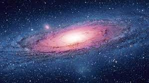

>Andromeda

The Andromeda Galaxy, also known as Messier 31, M31, or NGC 224 and originally the Andromeda Nebula (see below), is a barred spiral galaxy approximately 2.5 million light-years (770 kiloparsecs) from Earth and the nearest large galaxy to the Milky Way.[6] The galaxy's name stems from the area of Earth's sky in which it appears, the constellation of Andromeda, which itself is named after the Ethiopian (or Phoenician) princess who was the wife of Perseus in Greek mythology.
The virial mass of the Andromeda Galaxy is of the same order of magnitude as that of the Milky Way, at 1 trillion solar masses (2.0×1042 kilograms). The mass of either galaxy is difficult to estimate with any accuracy, but it was long thought that the Andromeda Galaxy is more massive than the Milky Way by a margin of some 25% to 50%. This has been called into question by a 2018 study that cited a lower estimate on the mass of the Andromeda Galaxy, combined with preliminary reports on a 2019 study estimating a higher mass of the Milky Way. The Andromeda Galaxy has a diameter of about 220,000 ly (67 kpc), making it the largest member of the Local Group in terms of extension.
The Milky Way and Andromeda galaxies are expected to collide in around 4-5 billion years, merging to form a giant elliptical galaxy or a large lenticular galaxy. With an apparent magnitude of 3.4, the Andromeda Galaxy is among the brightest of the Messier objects, making it visible to the naked eye from Earth on moonless nights, even when viewed from areas with moderate light pollution.
If you want to explore the universe you can also visit


The Andromeda Galaxy, also known as Messier 31, M31, or NGC 224 and originally the Andromeda Nebula (see below), is a barred spiral galaxy approximately 2.5 million light-years (770 kiloparsecs) from Earth and the nearest large galaxy to the Milky Way.[6] The galaxy's name stems from the area of Earth's sky in which it appears, the constellation of Andromeda, which itself is named after the Ethiopian (or Phoenician) princess who was the wife of Perseus in Greek mythology.
The virial mass of the Andromeda Galaxy is of the same order of magnitude as that of the Milky Way, at 1 trillion solar masses (2.0×1042 kilograms). The mass of either galaxy is difficult to estimate with any accuracy, but it was long thought that the Andromeda Galaxy is more massive than the Milky Way by a margin of some 25% to 50%. This has been called into question by a 2018 study that cited a lower estimate on the mass of the Andromeda Galaxy, combined with preliminary reports on a 2019 study estimating a higher mass of the Milky Way. The Andromeda Galaxy has a diameter of about 220,000 ly (67 kpc), making it the largest member of the Local Group in terms of extension.
The Milky Way and Andromeda galaxies are expected to collide in around 4-5 billion years, merging to form a giant elliptical galaxy or a large lenticular galaxy. With an apparent magnitude of 3.4, the Andromeda Galaxy is among the brightest of the Messier objects, making it visible to the naked eye from Earth on moonless nights, even when viewed from areas with moderate light pollution.
If you want to explore the universe you can also visit